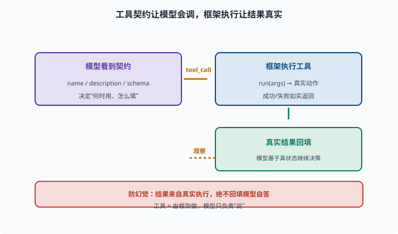

写一个工具：注册到 ctx.tools
目标：在 deepseek-harness 里从零注册一个工具，让 agent 能调用它。读完这一页，你能说清"工具契约 + 调用处理 + 注册"三部分，写下你的第一个自定义工具。
一个工具的三个部分
在 harness 里加一个工具，通常写三样：
1. 契约（名称、描述、参数 schema）——告诉模型"这是什么、怎么用"
2. 处理逻辑——真正执行的动作（读/写/查/算）
3. 注册——把工具挂到 ctx.tools，让循环发现它
这和 08-02 的工具三要素一致。
先看现成工具怎么写的
最快的上手方式是照抄现有工具模式：
rg -n "defineTool|ctx.tools.register" packages/shell/tool-bash/src packages/fs/tool-fs/src packages/todo/tool-todo/src
观察它们如何：
定义工具 schema（name/description/parameters）
实现执行函数（输入参数 → 输出结果）
注册进 ctx.tools 并在插件 effect 里完成
一个最小工具示例（概念）
真实 API 是 defineTool（来自 @deepseek-ai/dsh-tools），下面是一个最小骨架（省略部分字段，完整形态见 packages/todo/tool-todo/src/index.ts）：
ctx.tools.register(defineTool({
name: "add_numbers",
description: "计算两个数字之和。需要做计算时使用。",
parameters: {
a: { type: "number", required: true, description: "第一个加数" },
b: { type: "number", required: true, description: "第二个加数" },
},
output: {
schema: { type: "object", properties: { sum: { type: "number" } } },
render: (_args, value) => [{ type: "text", text: `${value.sum}` }],
},
async execute(args) {
return { sum: args.a + args.b }; // 真实执行
},
}));
关键：description 要让模型知道"什么时候该用它"；execute 返回真实结果。parameters 的写法不是标准 JSON Schema 的 { type: "object", properties: ... } 外壳，而是"参数名 → 约束"的直接映射，defineTool 内部会转成模型要的 JSON Schema。
注册进 ctx.tools
ctx.tools.register() 返回的本身就是清理函数（Cordis 注册类的惯例），放进插件的 effect 里即可：
ctx.effect(() => {
return ctx.tools.register({ ...tool }); // effect 返回它：插件销毁时自动清理
});
注册后，agent 的循环就能在恰当时候调用"add_numbers"并收到真实返回。
工具返回要"真实"
遵守防幻觉纪律（06-09、07-06）：工具输出来自真实执行，成功/失败都如实返回，让模型基于真状态决策而非瞎猜。

上图把"一个工具被用起来"的全过程串了一遍：左端"模型看到契约"（name / description / schema）决定了它要不要调、怎么填；接着它发出 tool_call，右端的"框架执行工具"调用 execute(args) 做真实动作，再把成功或失败如实回填给模型。那条虚线的返回箭头标的是"观察"：模型基于工具给的真结果继续决策。正下方那条红线点明纪律——结果必须来自真实执行，绝不回填模型自答，否则就是喂幻觉。写工具时只要记住"模型负责说，框架负责做"，分界就清楚了。
写完后怎么验证
1. typecheck 通过
2. 写一个单元测试：调用 run，断言输出正确
3. （若可行）跑一个 headless 任务，让模型实际调到它
新增工具最好配测试（AGENTS.md 的测试面原则）。
思考题
- 一个工具需要写哪三部分？
- 为什么 description/schema 写得好很重要？
- 工具注册通常放在插件的什么阶段？
- 为什么工具结果必须来自真实执行？
- 写完后应如何验证？
参考答案
- 契约（名称/描述/参数约束）、处理逻辑（
execute函数）、注册（ctx.tools.register让循环发现）。 - 因为模型靠描述判断"何时用、怎么填参数"（08-02）；清楚才不会误用、错填。
- 通常在插件的 effect 阶段：
ctx.effect(()=> ctx.tools.register(defineTool({...})))，返回的清理函数在插件销毁时移除注册。 - 因为模型只能"说"不能"做"，工具由框架真实执行、把真结果回填，避免模型"猜结果"导致幻觉与误判（07-06）。
- typecheck 通过、写单测断言 execute 的输出、能的话跑一个 headless 任务让模型实际调用到它。
下一步
- 想打包成可复用指令 → 10-06 写一个 skill。
- 想接外部工具服务器 → 10-07 接入 MCP 服务器。
- 想复习工具调用理论 → 08-02 工具调用。